Dr. Daniyar Turmukhambetov
- Staff Research Scientist, Niantic Spatial (London) X / Twitter LindedIn GitHub Scholar
I'm Staff Researcher Scientist at Niantic Spatial in London, UK, working on machine learning and computer vision. I hold a PhD in computer vision and I have 16 years of research experience, 8 years of industry work experience, track record of mentoring, publishing and shipping.
Niantic Spatial is a spin-off of Niantic Labs, creators of Pokémon Go, Monster Hunter Now, Ingress and Peridot. I work in London-based RnD team, where I build cutting edge neural networks and algorithms for Augmented Reality and Large Geospatial Models. I've trained and shipped production-grade neural networks to millions of players of global hits like Pokémon GO and Peridot. I've joined Niantic through acquisition of Matrix Mill, which I founded together with Dr. Gabriel Brostow and Dr. Michael Firman.
Previously, I was ...I've published and acted as a reviewer at CVPR, ECCV, ICCV. I've also reviewed for NeurIPS, 3DV, BMVC, etc. I received outstanding reviewer recognition at ICCV 2021, ECCV 2022 and CVPR 2025.
PRODUCTS
 |
Niantic Scaniverse: 360 video splatting (demo splat, niantic blog) Worked directly on 360 video to Gaussian splats pipeline including the overall pipeline, Structure from Motion, Geometry estimation, Gaussian splatting, SPZ exporting, quality benchmarking, etc. |
 |
Niantic SDK: Neural Networks for AR Effects (niantic sdk) Worked directly on Depth, Occlusion, Scene Segmentation and Object Detection features for AR effects on mobile devices. I contributed on data acquisition, labelling, neural network training, validation, weight quantization, etc. The AR effects were integrated into mobile games like Peridot and Pokémon GO games. |
PUBLICATIONS
| project webpage |
Cross-View Splatter: Feed-Forward View Synthesis with Georeferenced Images (nianticspatial.github.io/cross-view-splatter/) Matias Turkulainen, Akshay Krishnan, Filippo Aleotti, Mohamed Sayed, Guillermo Garcia-Hernando, Juho Kannala, Arno Solin, Gabriel Brostow, Daniyar Turmukhambetov CVPR 2026 |
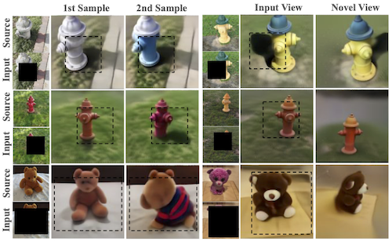 |
Complete Gaussian Splats from a Single Image with Denoising
Diffusion Models (nianticspatial.github.io/completesplat/) Ziwei Liao, Mohamed Sayed, Steven L. Waslander, Sara Vicente, Daniyar Turmukhambetov, Michael Firman arXiv 2025 |
 |
MVSAnywhere: Zero-shot Multi-view Stereo (nianticlabs.github.io/mvsanywhere/) Sergio Izquierdo, Mohamed Sayed, Michael Firman, Guillermo Garcia-Hernando, Daniyar Turmukhambetov, Javier Civera, Oisin Mac Aodha, Gabriel Brostow, Jamie Watson CVPR 2025 |
 |
Scene Coordinate Reconstruction: Posing of Image Collections via
Incremental Learning of a Relocalizer (nianticlabs.github.io/acezero) Eric Brachmann, Jamie Wynn, Shuai Chen, Tommaso Cavallari, Áron Monszpart, Daniyar Turmukhambetov, Victor Adrian Prisacariu ECCV 2024 |
 |
DiffusioNeRF: Regularizing Neural Radiance Fields with Denoising
Diffusion Models (github.com/nianticlabs/diffusionerf) Jamie Wynn, Daniyar Turmukhambetov CVPR 2023 |
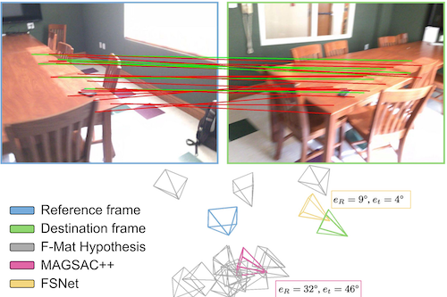 |
Two-view Geometry Scoring without Correspondences (github.com/nianticlabs/scoring-without-correspondences) Axel Barroso-Laguna, Eric Brachmann, Victor Adrian Prisacariu, Gabriel J Brostow, Daniyar Turmukhambetov CVPR 2023 |
 |
Map-free Visual Relocalization: Metric Pose Relative to a Single
Image (github.com/nianticlabs/map-free-reloc) Eduardo Arnold, Jamie Wynn, Sara Vicente, Guillermo Garcia-Hernando, Aron Monszpart, Victor Prisacariu, Daniyar Turmukhambetov, Eric Brachmann ECCV 2022 |
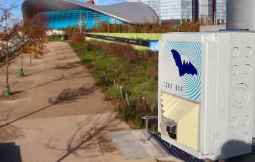 |
Shazam for Bats: Internet of Things for continuous real‐time
biodiversity monitoring (doi/pdfdirect/10.1049/smc2.12016) Sarah Gallacher, Duncan Wilson, Alison Fairbrass, Daniyar Turmukhambetov, Michael Firman, Stefan Kreitmayer, Oisin Mac Aodha, Gabriel Brostow, Kate Jones IET Smart Cities 2021 |
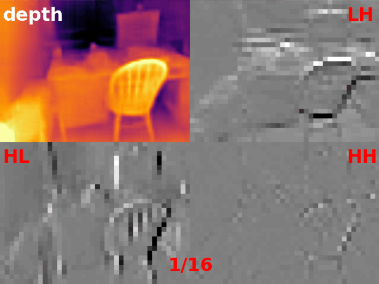 |
Single Image Depth Prediction with Wavelet
Decomposition (github.com/nianticlabs/wavelet-monodepth) Michaël Ramamonjisoa, Michael Firman, Jamie Watson, Vincent Lepetit and Daniyar Turmukhambetov CVPR 2021 |
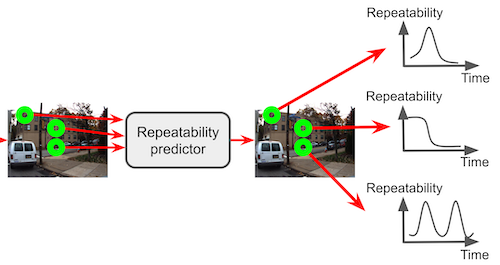 |
Learning to Predict Repeatability of Interest Points (github.com/nianticlabs/time-repeatability) Anh-Dzung Doan, Daniyar Turmukhambetov, Yasir Latif, Tat-Jun Chin and Soohyun Bae ICRA 2021 |
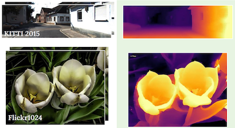 |
Learning Stereo from Single Images (github.com/nianticlabs/stereo-from-mono) Jamie Watson, Oisin Mac Aodha, Daniyar Turmukhambetov, Gabriel J. Brostow and Michael Firman ECCV 2020 |
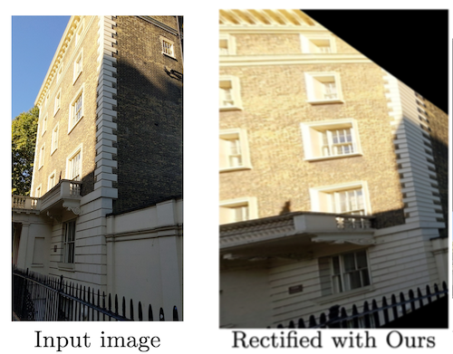 |
Single-Image Depth Prediction Makes Features Matching
Easier (github.com/nianticlabs/rectified-features) Carl Toft, Daniyar Turmukhambetov, Tosten Sattler, Fredrik Kahl and Gabriel J. Brostow ECCV 2020 |
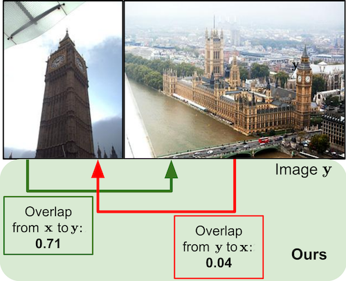 |
Predicting Visual Overlap of Images Through Interpretable
Non-Metric
Box Embeddings (github.com/nianticlabs/image-box-overlap) Anita Rau, Guillermo Garcia-Hernando, Danail Stoyanov, Gabriel J. Brostow and Daniyar Turmukhambetov ECCV 2020 |
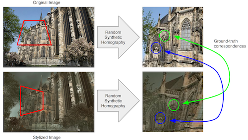 |
Image Stylization for Robust Features (arxiv.org/abs/2008.06959) Iaroslav Melekhov, Gabriel J. Brostow, Juho Kannala, Daniyar Turmukhambetov arXiv 2020 |
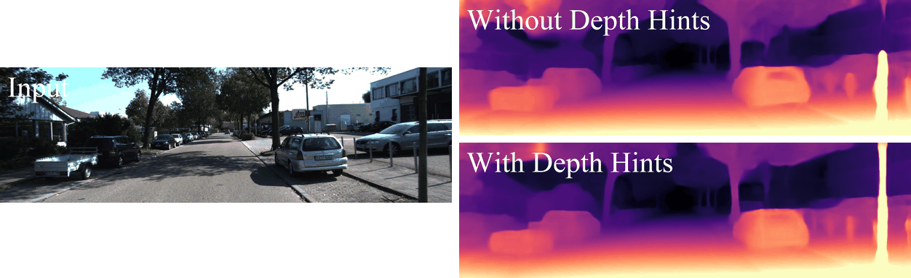 |
Self-Supervised Monocular Depth Hints (github.com/nianticlabs/depth-hints) Jamie Watson, Michael Firman, Gabriel J. Brostow and Daniyar Turmukhambetov ICCV 2019 |
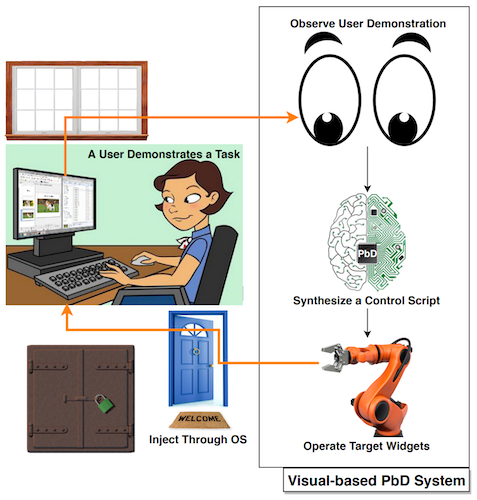 |
HILC: Domain-Independent PbD System Via Computer Vision and
Follow-Up
Questions (discovery.ucl.ac.uk/10075771/) Thanapong Intharah, Daniyar Turmukhambetov and Gabriel J. Brostow ACM TiiS 2019 |
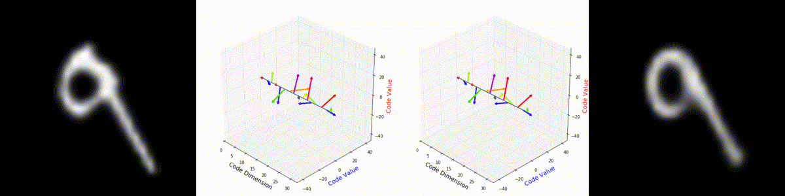 |
Interpretable Transformations with Encoder-Decoder
Networks (visual.cs.ucl.ac.uk/pubs/interpTransform/) Daniel E. Worrall, Stephan J. Garbin, Daniyar Turmukhambetov and Gabriel J. Brostow ICCV 2017 |
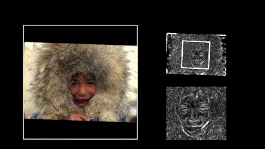 |
Harmonic Networks: Deep Translation and Rotation
Equivariance (visual.cs.ucl.ac.uk/pubs/harmonicNets/) Daniel E. Worrall, Stephan J. Garbin, Daniyar Turmukhambetov and Gabriel J. Brostow CVPR 2017 |
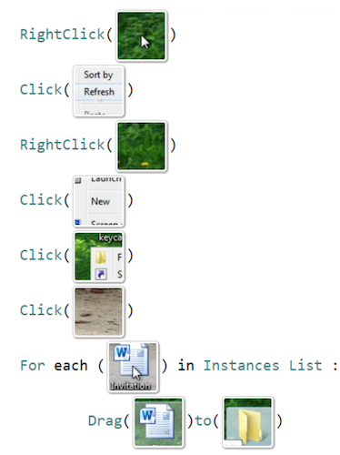 |
Help, It Looks Confusing: GUI Task Automation Through Demonstration
and
Follow-up Questions (visual.cs.ucl.ac.uk/pubs/HILC/) Thanapong Intharah, Daniyar Turmukhambetov and Gabriel J. Brostow ACM IUI 2017 (Best Student Paper Honorable Mention) |
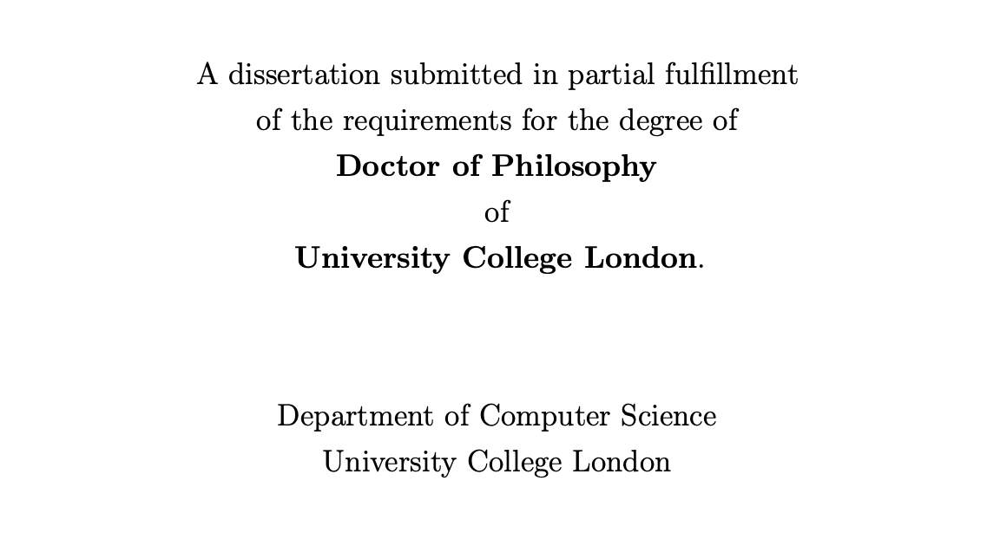 |
Synthesizing and Editing Photo-realistic Visual
Objects (discovery.ucl.ac.uk/1531112/) Daniyar Turmukhambetov PhD Thesis, University College London 2016 |
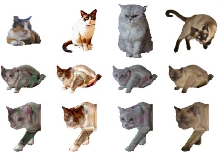 |
Modeling Object Appearance using Context-Conditioned Component
Analysis (visual.cs.ucl.ac.uk/pubs/ccca/) Daniyar Turmukhambetov, Neill D.F. Campbell, Simon J.D. Prince and Jan Kautz CVPR 2015 |
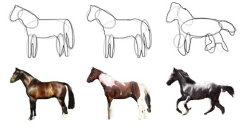 |
Interactive Sketch-Driven Image Synthesis (visual.cs.ucl.ac.uk/pubs/isdis/) Daniyar Turmukhambetov, Neill D.F. Campbell, Dan B Goldman and Jan Kautz Computer Graphics Forum (CGF) 2015 |